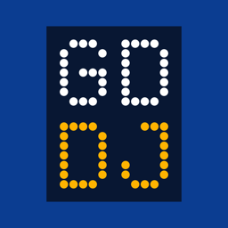

Gameday DJ Support
Music, goal horns and announcements for your game, on iPhone, iPad and Android.
Questions, problems or ideas? Email us:
Tell us your device, its iOS or Android version, and what you were doing, and we'll get back to you as soon as we can. For a how-to on any feature, see Help in the app (the ⋮ menu → Help).
Common questions
Where does Gameday DJ get my songs?
iPhone & iPadFrom three places (Settings → Where your music is): the Gameday DJ folder, in the Files app and in Finder when your device is plugged into a Mac; folders you link from the Files app, including iCloud Drive; and your music library, songs downloaded to the device.
AndroidThe music on your device. Add from files copies songs in from your files or a cloud app, into the Music/Gameday DJ folder.
Songs play from your device, so no internet connection is needed at the game.
Why won't some Apple Music songs play?
iPhone & iPadSongs from an Apple Music subscription are protected and can only be played in the Music app. Music you've bought, or synced from a computer, works.
Gameday DJ plays music files you own or have the rights to use.
What's free, and what does the unlock add?
The free version has every feature, for up to 20 songs. A single one-time purchase unlocks premium for good: unlimited songs. No subscription, no ads and no account.
Settings → About → Gameday DJ shows which version you have and opens the unlock.
I bought the unlock. How do I get it on a new device?
Open the unlock (Settings → About → Gameday DJ) and tap Restore purchase. The unlock goes with the store account you bought it with:
iPhone & iPadYour Apple Account. With Family Sharing, your family has it too.
AndroidThe Google Play or Amazon Appstore account you bought it with.
A purchase on one store doesn't carry over to another (for example, from the App Store to Google Play).
How do I move my setup to another device?
Settings → Back up saves your profiles, buttons, playlists, recordings, logos, your own horns and the announcements' saved audio to one file, saved where you choose (such as the Files app, a cloud drive or a file manager). On the other device, use Restore.
Backups work across iPhone, iPad and Android: one made on either restores on the other.
The song files themselves aren't in the backup. Copy them over too; Gameday DJ then finds them again with Missing songs → Find automatically.
Some songs say they're missing.
That happens when a file was moved or renamed. Settings → Missing songs lists them: Find automatically matches them by name and size, Moved folder… points a whole folder at its new place, or tap a song to pick its file.
Announcements: how do I get a better voice?
In Announcements, tap Download additional voices for free, natural-sounding announcer voices (a one-time download). Your device's own voices work too.
iPhone & iPadFor a better device voice, download an Enhanced or Premium voice in iOS Settings → Accessibility → Spoken Content → Voices.
Announcements are prepared ahead of time, so they play with no connection at the game.
Will the music keep playing if the screen turns off?
Yes. Music keeps playing with the screen off or while you use another app, with controls on the lock screen (and in Control Center on iPhone and iPad, or the notification on Android).
What data does Gameday DJ collect?
None. No tracking, no analytics and no sign-in. Your music, playlists and recordings stay on your device. The internet is used only when you ask for it: to look up song details or covers, or to download additional voices.
The details are in our Privacy Policy.